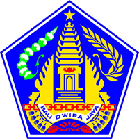
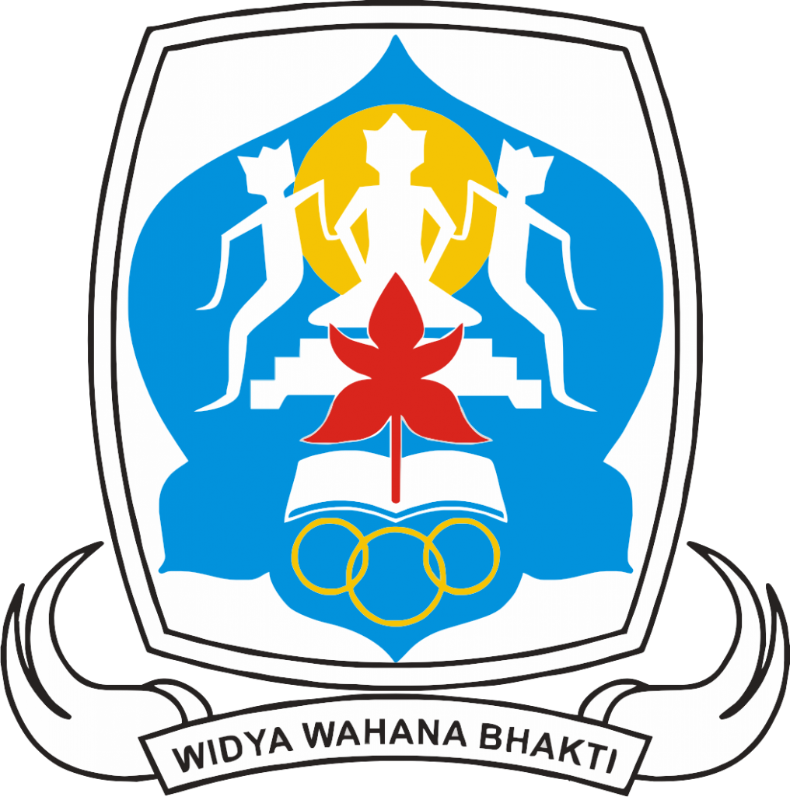

Nomor: ........................................................................
Yang bertanda tangan di bawah ini:
| Nama | : | I Wayan Sudra Astra, S.Pd., M.Pd. |
| NIP | : | 19710415 199703 1 007 |
| Jabatan | : | Kepala SMAN 1 Gianyar |
| Unit Kerja | : | SMAN 1 Gianyar, Kabupaten Gianyar, Provinsi Bali |
Dengan ini memberikan rekomendasi penuh kepada:
| Nama Lengkap | : | I Putu Darma Putra, S.Pd. |
| NIP | : | 19880930 202221 1 001 |
| Mata Pelajaran | : | Matematika |
| Jabatan | : | Guru Matematika / Inovator Digital Sekolah |
Bahwa yang bersangkutan merupakan guru aktif di SMAN 1 Gianyar yang memiliki integritas, dedikasi tinggi, serta rekam jejak inovasi yang nyata dalam mendukung efisiensi manajemen dan pembelajaran sekolah melalui pengembangan SIMAK DOSMAN (Sistem Informasi Manajemen Anak Kolektif Dosman).
Demikian Surat Rekomendasi ini dibuat dengan sebenarnya untuk digunakan sebagai salah satu persyaratan administratif mengikuti seleksi Program Guru Inspiratif Astra Honda 2026.
Gianyar, 02 Oktober 2026
Kepala SMAN 1 Gianyar,
I Wayan Sudra Astra, S.Pd., M.Pd.
NIP. 19710415 199703 1 007